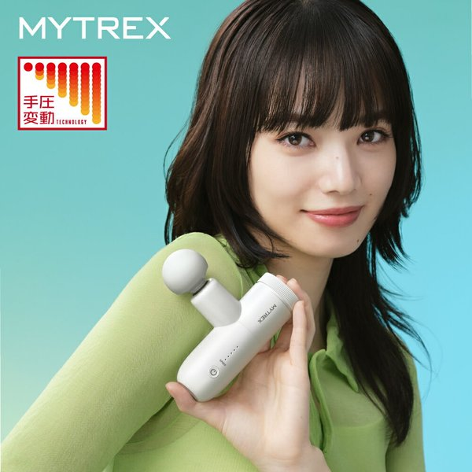
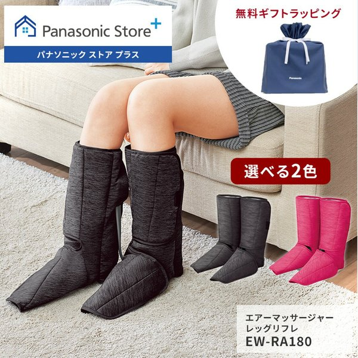
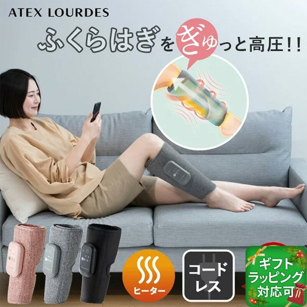
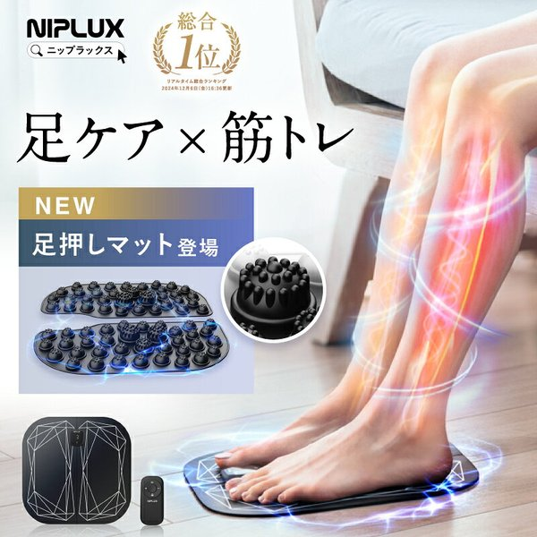
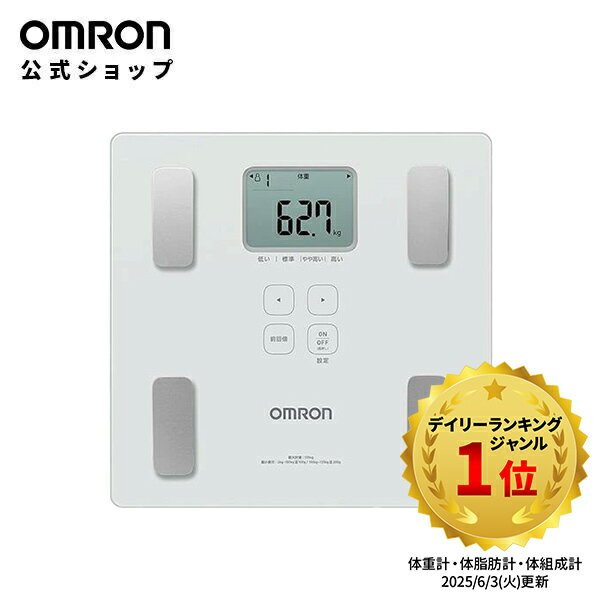
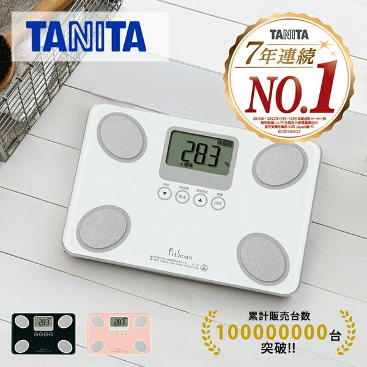
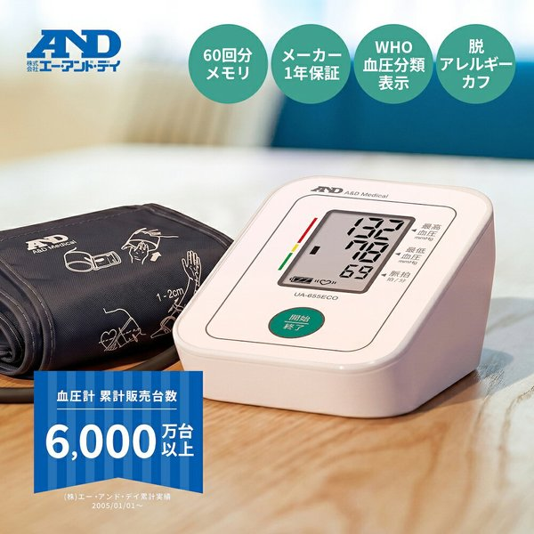
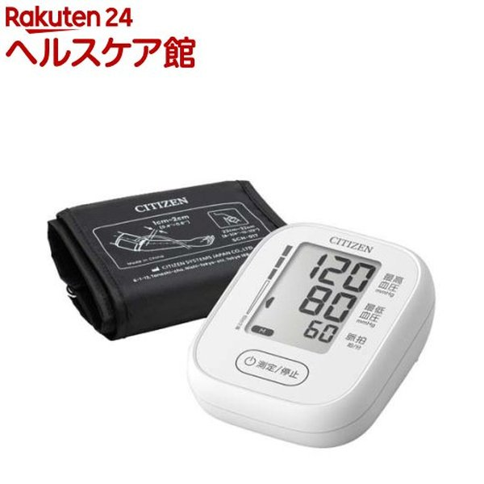
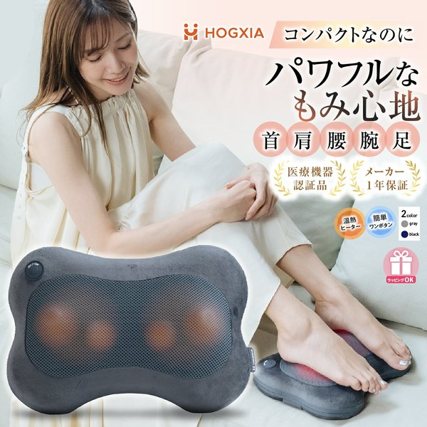
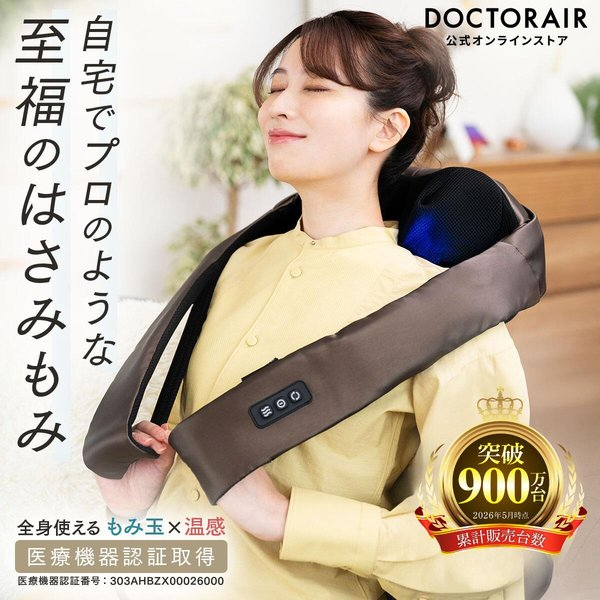

【2026年・年末の疲労回復】マッサージガン・フットケア・体組成計・血圧計・ネックケア10選｜MYTREX・パナソニック・アテックス・NIPLUX・オムロン・タニタ・A&D・シチズン・HOGXIA・ドクターエアを実売価格で比較
年末は、仕事も家のことも詰まりやすい時期です。肩と首のこり、脚のむくみ、運動不足。症状は違っても、毎日少しずつケアできる道具があると、疲れのたまり方が変わります。
選ぶ軸は3つです。「まずほぐす場所」。肩・腰ならマッサージガンかクッション、脚ならフットマッサージャーかレッグリフレ、首ならネックマッサージャー。「次に測る習慣」。体組成計と血圧計は、数値の変化を見るだけで生活の見直しにつながります。「最後に置き場所」。コードレスのものはソファや寝室でも使え、コード式はパワーが安定します。なお、レビュー件数が50件に満たない商品は記事内に実数を明記しています。
本記事では、楽天市場で人気・高評価の疲労回復・ヘルスケア家電10選を、実売価格とレビュー評価つきで写真付き紹介します。
- おすすめ10選 スペック・特徴比較表
- BEST 1｜マッサージガン RELAX
- BEST 2｜エアーマッサージャー レッグリフレ EW-RA180
- BEST 3｜ルルド コードレス フットマッサージャー ふくらはぎゅ AX-HJ360
- BEST 4｜EMS フットマッサージャー 足押しマット
- BEST 5｜体重計 体組成計 カラダスキャン KRD-203
- BEST 6｜体重計 体組成計 FS-101A
- BEST 7｜上腕式血圧計 UA-655ECO
- BEST 8｜上腕式血圧計 CHUN2701
- BEST 9｜マッサージクッション HGX-129M
- BEST 10｜ネックマッサージャー 温感×はさみもみ
- 【読者負担0円】買わなくても得する無料サービス
- まとめ：疲労回復・ヘルスケア家電10選の選び方
| 順位 | 商品名 | ブランド | 最大の特徴・おすすめ理由 | 総合評価 |
|---|---|---|---|---|
| BEST 1 | マッサージガン RELAX | MYTREX（マイトレックス） | アタッチメントを替えて部位に合わせられる | 4.70 |
| BEST 2 | エアーマッサージャー レッグリフレ EW-RA180 | パナソニック（Panasonic） | ふくらはぎから足先まで加圧できる | 4.33 |
| BEST 3 | ルルド コードレス フットマッサージャー ふくらはぎゅ AX-HJ360 | アテックス（ATEX） | コードレスで場所を選ばない | 4.61 |
| BEST 4 | EMS フットマッサージャー 足押しマット | NIPLUX（ニップラックス） | 折りたためる薄型マット | 4.53 |
| BEST 5 | 体重計 体組成計 カラダスキャン KRD-203 | オムロン（OMRON） | 乗るだけで複数の項目を測定 | 4.57 |
| BEST 6 | 体重計 体組成計 FS-101A | タニタ（TANITA） | 薄型で収納しやすい | 4.53 |
| BEST 7 | 上腕式血圧計 UA-655ECO | エーアンドデイ（A&D） | 60回分の測定値を記憶できる | 4.55 |
| BEST 8 | 上腕式血圧計 CHUN2701 | シチズン（CITIZEN） | ボタンひとつで測定できる | 4.74 |
| BEST 9 | マッサージクッション HGX-129M | HOGXIA（ホグシア） | 首・肩・腰・足に使える | 4.63 |
| BEST 10 | ネックマッサージャー 温感×はさみもみ | ドクターエア（DOCTORAIR） | 温感とはさみもみで首をケアできる | 4.54 |
マッサージガン RELAX

MYTREXのマッサージガン「RELAX」は、筋膜リリース用のハンディガンです。振動の強さを段階的に切り替えられ、付属のアタッチメントを替えて肩・腰・足裏などに当てられます。コードレスなので、ソファに座ったまま気になる部位をケアできます。運動後のケアにも、デスクワークで固まった肩にも使える一台です。楽天市場での実売価格は約14,960円（2026年11月時点）。
- アタッチメントを替えて部位に合わせられる
- コードレスで好きな場所で使える
- 振動の強さを切り替えられる
- 本体はそれなりの重さがあり、長時間使うと腕が疲れる
エアーマッサージャー レッグリフレ EW-RA180

パナソニックのレッグリフレは、ふくらはぎから足先までをエアで包み込むように加圧するマッサージャーです。座ったまま装着でき、テレビを見ながらでも使えます。カバーは洗えて、2色から選べます。立ち仕事やデスクワークで脚がむくみやすい人に向いています。楽天市場での実売価格は約26,975円（2026年11月時点）。
- ふくらはぎから足先まで加圧できる
- 座ったまま使える
- カバーを洗える
- レビューは21件と少なく、1回の使用に10分ほどかかる
ルルド コードレス フットマッサージャー ふくらはぎゅ AX-HJ360

アテックスのルルド「ふくらはぎゅ」は、ふくらはぎをぎゅっと高圧で挟み込むコードレス式のフットマッサージャーです。エアで加圧しながら、もみ玉でほぐす構造。コードレスなのでソファでも寝室でも使え、ヒーター機能付きで温めながらケアできます。ふくらはぎの張りが気になる日に使いやすい一台です。楽天市場での実売価格は約6,380円（2026年11月時点）。
- コードレスで場所を選ばない
- ヒーターで温めながら使える
- 加圧の強さを選べる
- ふくらはぎ向けで、足裏のつぼを押す用途には物足りない
EMS フットマッサージャー 足押しマット

NIPLUXのフットマッサージャーは、足裏のマットに乗って使うEMSタイプです。電気刺激で足裏からふくらはぎの筋肉にアプローチし、モードと強さを選べます。マットは薄く折りたためるので、使わないときはすき間に収納できます。テレワークの合間に数分乗るだけ、という使い方ができます。楽天市場での実売価格は約9,900円（2026年11月時点）。
- 折りたためる薄型マット
- モードを選べる
- 座ったまま数分で使える
- EMSの刺激が苦手な人には向かない
体重計 体組成計 カラダスキャン KRD-203

オムロンのカラダスキャン KRD-203は、体重・体脂肪率・内臓脂肪レベルなどを測れる体組成計です。乗るだけで測定でき、4人分のデータを記録できます。薄型で収納しやすく、白とダークブルーの2色。毎日の数値を記録しておくと、食事や運動の変化に気づきやすくなります。楽天市場での実売価格は約3,680円（2026年11月時点）。
- 乗るだけで複数の項目を測定
- 4人分のデータを記録できる
- 薄型で収納しやすい
- スマホ連動はできないモデルなので、記録は手元で管理する
体重計 体組成計 FS-101A

タニタのFS-101Aは、体重と体脂肪率を測れるシンプルな体組成計です。薄型で置き場所を選ばず、ガラス天板で拭き掃除がしやすいのが特徴。乗る位置によって数値がぶれにくい設計で、毎朝の習慣にしやすい。体重を手軽に記録したい人の入門機として選びやすいモデルです。楽天市場での実売価格は約2,970円（2026年11月時点）。
- 薄型で収納しやすい
- ガラス天板で手入れが簡単
- 操作がシンプル
- 内臓脂肪や筋肉量までは測れない
上腕式血圧計 UA-655ECO

A&DのUA-655ECOは、上腕式の家庭用血圧計です。ボタンを押すだけで自動で加圧・測定し、測定値は60回分を記憶します。表示は大きく、字が読みやすいのが特徴。家庭での毎日の測定に向いていて、カフは巻きやすい形状なので一人でも測りやすい設計です。楽天市場での実売価格は約3,980円（2026年11月時点）。
- 60回分の測定値を記憶できる
- 表示が大きく読みやすい
- カフを巻きやすい
- スマホへのデータ転送には対応していない
上腕式血圧計 CHUN2701

シチズンのCHUN2701は、1回分の測定値を記録するエントリーモデルの上腕式血圧計です。ボタンひとつで測定でき、朝の忙しい時間でも迷わず使えます。本体は小さく、付属の収納ケースにまとめて片づけられます。初めて家庭用血圧計を買う人や、旅行先にも持っていきたい人に向いています。楽天市場での実売価格は約3,979円（2026年11月時点）。
- ボタンひとつで測定できる
- コンパクトで収納ケース付き
- 操作がわかりやすい
- 記憶できるのは1回分で、毎日の記録は自分でつける
マッサージクッション HGX-129M

HOGXIAのマッサージクッションは、首・肩・腰・足に当てて使えるクッション型のマッサージ器です。もみ玉が回転して、体重をかけた分だけ深くほぐれます。ヒーター付きで温めながら使え、クッションとしても使えるのでリビングに置いたままにできます。ソファやベッドの上で気軽に使える一台です。楽天市場での実売価格は約9,800円（2026年11月時点）。
- 首・肩・腰・足に使える
- 温めながらもめる
- クッションとしても使える
- 電源コードが必要で、コンセントの近くで使う
ネックマッサージャー 温感×はさみもみ

ドクターエアのネックマッサージャーは、首をはさみ込むようにもみ、温感で温めるタイプです。コードレスなので、ソファやベッドの上でも使えます。首だけでなく肩や背中にも当てられ、強さを切り替えられます。首こりが気になるときに、短時間でケアできるのが利点です。楽天市場での実売価格は約19,800円（2026年11月時点）。
- 温感とはさみもみで首をケアできる
- コードレスで使える
- 肩や背中にも当てられる
- 装着したまま歩くのは難しく、座って使う
この記事の商品を買う前に、まずは無料で得する選択肢をチェック。どれも登録・利用は0円で、無料期間中に解約すれば料金はかかりません。読みたい雑誌がある人、ポイントを貯めたい人、アンケートなら気軽という人、それぞれに合うものを選べます。
初回31日無料・無料期間中に解約すれば0円 → 楽天ポイントモール｜登録無料で毎日ポイ活
買い物なしでもポイントが貯まる無料サービス → 楽天インサイト｜アンケートに答えてポイント
登録無料・すきま時間のアンケートで貯まる → 楽天カード｜年会費永年無料
新規発行・年会費ずっと0円 →
4つのサービスの違いと使い分けは「出費0円で得する！買わずにポイントが貯まる無料サービス厳選4選」でまとめています。
💡 まとめ：疲労回復・ヘルスケア家電10選の選び方
疲労回復の道具は、ほぐす・温める・測るの3つで揃えると続けやすくなります。肩と腰はMYTREXのマッサージガンとHOGXIAのマッサージクッション、首はドクターエアのネックマッサージャー。脚は、ふくらはぎを挟み込むアテックス ルルドのふくらはぎゅ、EMSで刺激するNIPLUXのフットマッサージャー、エアで包むパナソニックのレッグリフレから、疲れ方に合わせて選びます。測る道具は、体重と体脂肪のオムロン カラダスキャンとタニタの体組成計、血圧のA&Dとシチズンの上腕式血圧計。ケアと記録をセットにすると、年末の疲れを持ち越しにくくなります。
楽天市場では「5と0のつく日」や「お買い物マラソン」などのキャンペーンに合わせて購入すると、ポイント還元が最大化してお得に手に入ります。ぜひチェックしてみてくださいね。